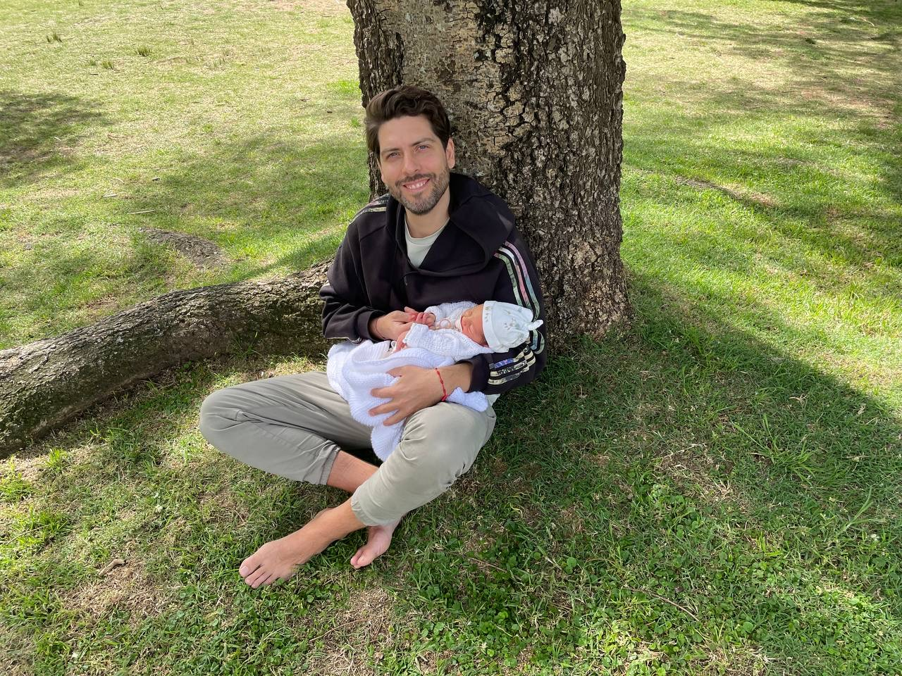
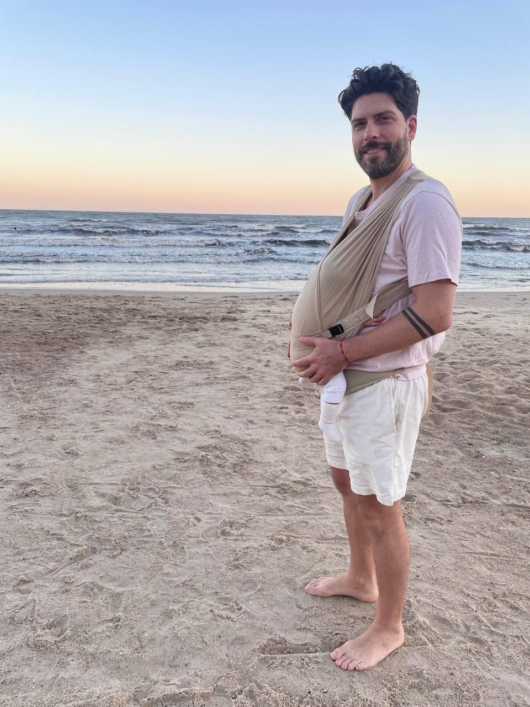
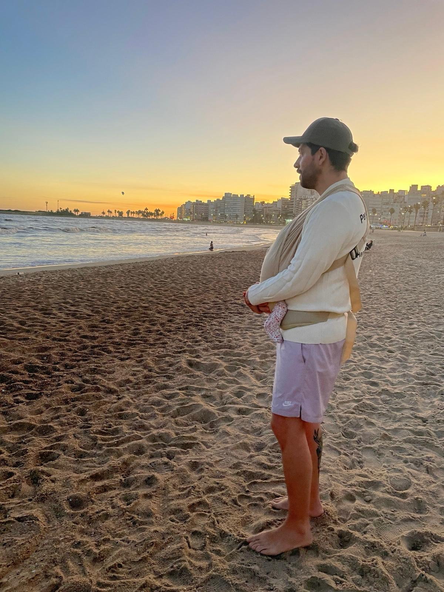
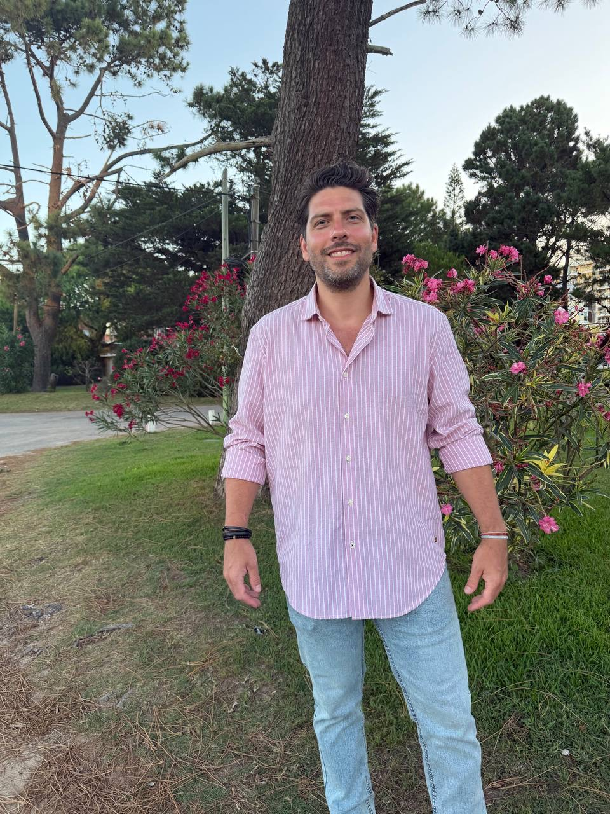

Lo que vivís como padre — las reacciones, el miedo, el agotamiento, la distancia — tiene raíces más profundas de lo que parece. Este es un espacio para que las veas, las entiendas, y elijas quién querés ser.

No siempre el quiebre tiene nombre claro. A veces se siente como presión, como vacío, como algo que no cierra aunque tengas todo en su lugar.
Alcanzás lo que te proponés pero no sos feliz. Hay una grieta — en la pareja, en el trabajo, en cómo te relacionás — que no sabés nombrar.
No querés repetir el padre que tuviste — o la ausencia de uno. Pero sin herramientas concretas, el patrón aparece solo, sin que lo llames.
El trabajo, la familia, la imagen. Masculinidad distorsionada por el mandato social — sin herramientas para salir del modo automático ni saber cómo pedir ayuda.
Transitar este camino, este cambio, requiere presencia, consciencia y dirección.

Soy Danilo. Durante mucho tiempo caminé buscando una versión prestada del éxito — una que no entendía del todo y que, cada vez que alcanzaba, me dejaba más vacío que antes.
Fui ese hombre que tenía todo en el papel y sentía que algo fallaba adentro. Pasé por quiebres de salud, de identidad, de vínculos. Y fue en esos quiebres donde empecé a encontrar lo que realmente estaba buscando: a mí.
Ese camino me llevó a estudiar y a integrar herramientas de autoconocimiento — no como dogmas, sino como lentes para verme mejor. El Enneagrama, el Diseño Humano, la Astrología Vincular, la regulación emocional, el trabajo con la historia familiar. Todo al servicio de una sola pregunta: ¿quién quiero ser?
Hoy soy padre. Y entiendo desde adentro lo que significa pararse frente a ese rol sin haber procesado lo que uno cargó desde chico. Por eso hago este trabajo — no desde el saber académico, sino desde el camino recorrido.
Nietzsche decía "Yo no soy un hombre, soy un campo de batalla". Identificarse como un campo de batalla es aceptar la complejidad humana y dejar que el conflicto interno sea motor de transformación.
Si llegaste hasta acá, algo en vos ya sabe que es momento de mirarse. Ese reconocimiento es el primer paso.
Trabajo con hombres en transición hacia la paternidad y con equipos que quieren liderar desde la conciencia, no desde el miedo o la inercia. El punto de unión: el Protagonismo en tu historia como eje del cambio.
Un proceso 1:1 para hombres que quieren atravesar la transición hacia la paternidad con conciencia. Trabajamos desde adentro — creencias, patrones heredados, identidad masculina, vínculo.
Mentoring para líderes y equipos que quieren reducir el ruido interno y construir culturas donde las personas lideren desde sus fortalezas reales, no desde la presión o la máscara.
Cada fase tiene un foco específico. No es lineal — es vivo. Avanzamos al ritmo que el proceso pide.
Ver qué me pasa. Identificar emociones, observar patrones de reacción, nombrar lo que está sucediendo realmente.
Entender de dónde viene. Historia familiar, patrones heredados, los triggers que disparan reacciones automáticas.
Elegir quién quiero ser. Masculinidad, paternidad, pareja, comunicación. Construir una identidad elegida, no heredada.
Llevarlo a la vida real. Regulación emocional, responsabilidad, acción concreta. El cambio que se sostiene.
30 minutos gratis. Sin compromiso. Vemos si hay match entre lo que necesitás y lo que ofrezco. La primera conversación ya es parte del proceso.
Entendemos tu punto de partida. Qué cargás, qué querés cambiar, qué te frena. La claridad que necesitás para saber si querés seguir.
Sesiones regulares, herramientas concretas, acompañamiento entre encuentros. A tu ritmo, con profundidad real y resultados que se sostienen.

"Llegué pensando que el problema era el trabajo. Descubrí que era yo el que necesitaba cambiar. Fue incómodo y liberador al mismo tiempo."
"No sabía que cargar con la imagen del padre ausente me estaba afectando en todo. Danilo me ayudó a verlo y a soltar algo que no sabía que estaba cargando."
No. Es un proceso terapéutico de acompañamiento — no reemplaza a un psicólogo ni a un psiquiatra. Trabajo desde el autoconocimiento, la identidad y el cambio de patrones usando herramientas como el Enneagrama, el Diseño Humano y metodologías de coaching profundo. Si en el proceso identifico que necesitás otro tipo de apoyo, te lo digo directo.
No necesariamente. Trabajo con hombres que son padres, que están en camino a serlo, y también con hombres que están procesando su propia historia familiar — que a veces es el origen de todo. Si estás en ese lugar de pregunta o de quiebre, eso ya es suficiente razón para una llamada.
Si estás haciéndote esa pregunta, probablemente ya lo estés. La disposición no es tener todo claro — es estar dispuesto a mirar. La llamada exploratoria existe precisamente para eso: para ver juntos si este es el momento y el camino adecuado para vos.
Trabajo tanto de forma presencial en Montevideo como online. La modalidad la definimos según lo que funcione mejor para vos y para el proceso.
Depende de cada persona y de lo que traiga. El proceso tiene cuatro fases — algunas personas las transitan en pocos meses, otras necesitan más tiempo. Lo que no hago es estirarlo artificialmente. La primera llamada ya nos da una idea del alcance.
Con más de 15 años en la industria Tech y roles de liderazgo, entiendo desde adentro lo que significa sostener equipos bajo presión. El liderazgo que no parte del autoconocimiento termina siendo gestión del miedo.
Charlas — para equipos y eventos corporativos. Inteligencia Adaptativa, cambio organizacional, liderazgo consciente.
Talleres de Reconfiguración Interna — Técnicas y herramientas para autoliderazgo, productividad sin ansiedad, feedback empoderador y autonomía consciente.
Mentoría individual para líderes — para quien lidera a otros y necesita liderarse a sí mismo primero.

Completá estas preguntas y me pongo en contacto para coordinar una llamada exploratoria gratuita de 30 minutos. Ese primer paso ya es parte del proceso.